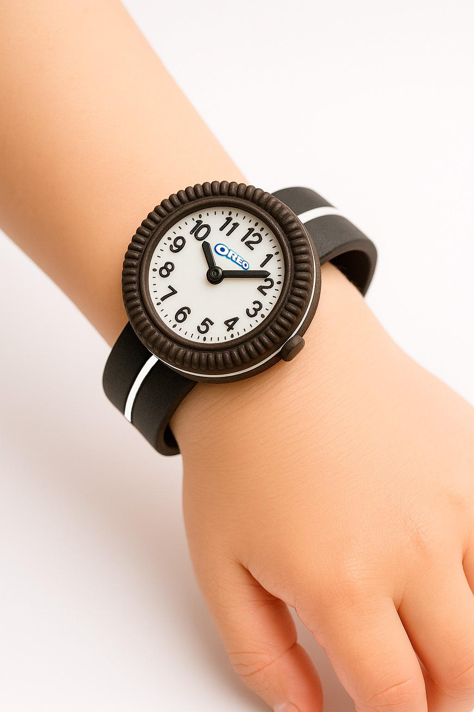
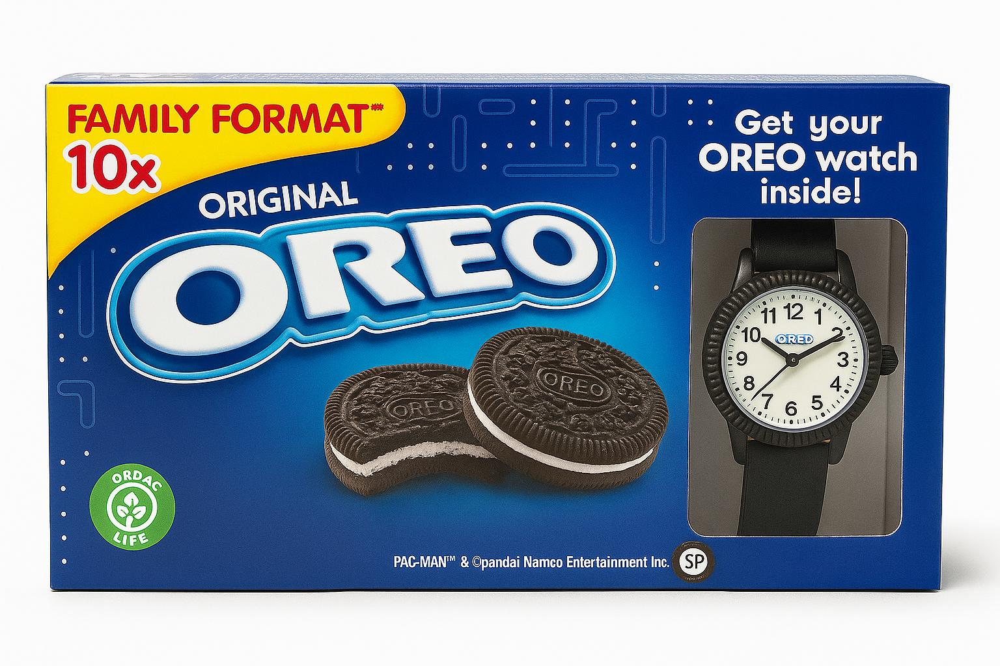
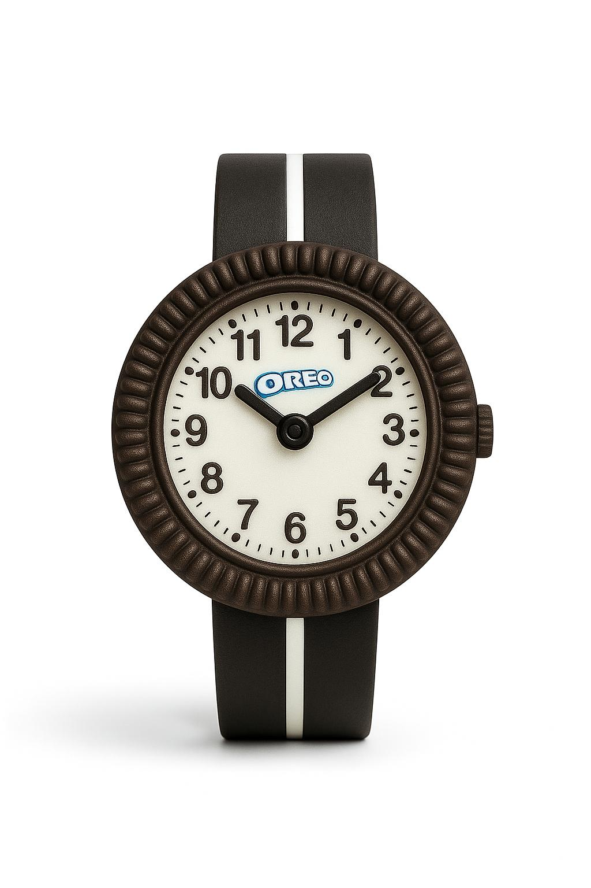

Oreo O’Clock
Creative Direction · Product Concept · Branded Content · AI · Photoshop
Oreo O’Clock nace de una idea muy sencilla: algunos de los objetos que regalan las marcas acaban quedándose en nuestras casas durante años. Desde los inventos de Cola Cao hasta los obsequios del Happy Meal.
A partir de ese insight diseñé Oreo O’Clock, un reloj de edición limitada con forma de Oreo que convierte la hora de merendar en la hora de la Oreo. Un objeto funcional y coleccionable, desarrollado con IA y Photoshop, pensado para crear un vínculo emocional con la marca.
Más que un regalo promocional, la activación puede mejorar la retención y fidelización, potenciar la visibilidad orgánica y dejar huella en el consumidor.


